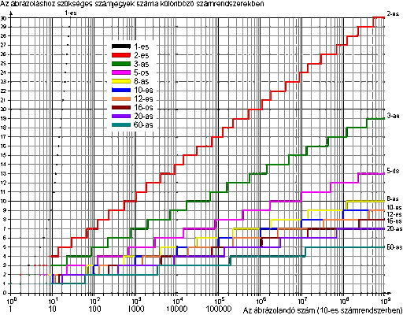
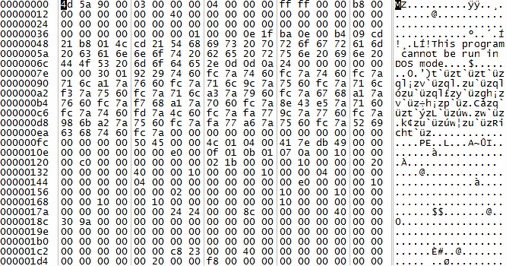

A tizenhatos számrendszer a 0, 1, 2, 3, 4, 5, 6, 7, 8, 9 számjegyeken kívül az A, B, C, D, E, F betűket használja, ezek segítségével ábrázolja a valós és komplex számok
A kettes számrendszert Gottfried Wilhelm Leibniz találta fel, melyet az Explication de l'Arithmétique Binaire c. könyvében írt le. Ez egy 18. században feltalált két számjeggyel ábrázoló, helyiérték-jelölő számrendszer, mely a 0-ás és 1-es számjegyeket alkalmazza. Minden alapművelet elvégezhető ebben a számrendszerben. Számítások számrendszereként a Neumann-elvekben szerepel, melyet Neumann János alkotott 1946-ban. Minden számítást végző elektronikai eszköz ezt a módszert alkalmazza, illetve a gyors hatványozásban is használják. A kettes számrendszerből egyszerűen átváltást végezhetünk tízes számrendszerbe és vissza. A tízes számrendszert még i.e. 4000-ben, Irán területén találták fel. A számrendszer ábrázolásában az egyes számjegyek azt jelölik, hogy a tíz különböző hatványi milyen 0 és 9 közötti együtthatókkal megszorozva adják összegül a számot. A nullát is tartalmazó decimális helyi értékes rendszer legkésőbb az i. sz. 5. században jelent meg Indiában. A „tíz” kiemelten fontos volt a számrendszerben, mivel az embernek is tíz ujja van. A rendszer terjedése a 7. századra már az Indiától távoli, Délkelet-Ázsiai régiók kőfeliratain is nyomon követhető. Kína saját számláló rúdakat készített a tízes számrendszerhez. Arab számokat használ. A tizedestörtek az első évezred végén, az araboknál fordulnak elő legkorábban. Helyiértékei a tíz hatványai. Tizedestört formában ábrázolhatók a nem egész számok a rendszerben.
A számok számjegyeinek helyiértékei jobbról balra növekednek, azaz jobbról balra haladva egyesével a számjegyeken, az első nulladik helyiértékű, a második első helyiértékű. A kettes vagy tizenhatos számrendszerbeli szám tízes számrendszerbe való átváltása esetén a számon belül az adott számjegy szorzandó az adott számrendszer alapjának a szám helyiértékével vett hatványával, majd minden számjegyre elvégezve ezt a műveletet, vesszük ezen értékeknek az összegét.
Ha decimális számrendszerből binárisba váltunk át, a decimális számot kettővel kell osztani egészen addig, amíg hányadosként 1-et kapunk. Az egyes osztások utánfeljegyezzük a maradékot. A decimális szám bináris számrendszerbeli alakját a maradékok egymás utáni visszafele történő felírásával kapjuk meg. A visszafelé olvasást az indokolja, hogy mire 1-et kaptunk hányadosként, addig n-szer osztottunk le 2-vel, így 2n lesz a legnagyobb 2-hatvány, amellyel a szám osztható.
A megadott konvertálásnál a számot egészrészre + törtrészre bontjuk fel. Az egészrészt ugyanúgy váltjuk át, ahogy a korábbi példákban. A törtrész átváltásánál pedig mindig meg kell szorozni az aktuális törtrészt 2-vel, és az egészrészeket fel kell jegyezni. Az egészrészeket egymás után olvasva megkapjuk a törtrész bináris változatát. Az algoritmus akkor áll meg, ha a törtrész 0 lesz.
 